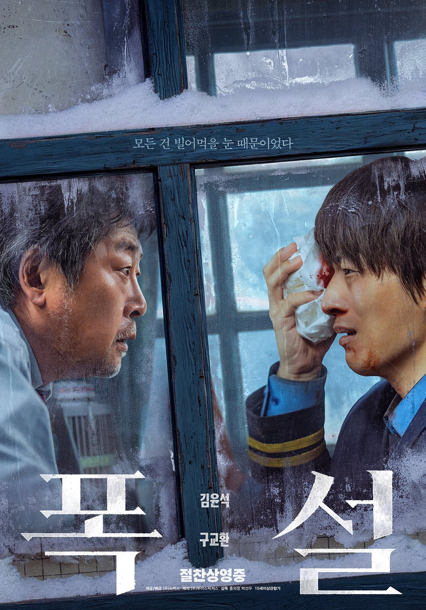
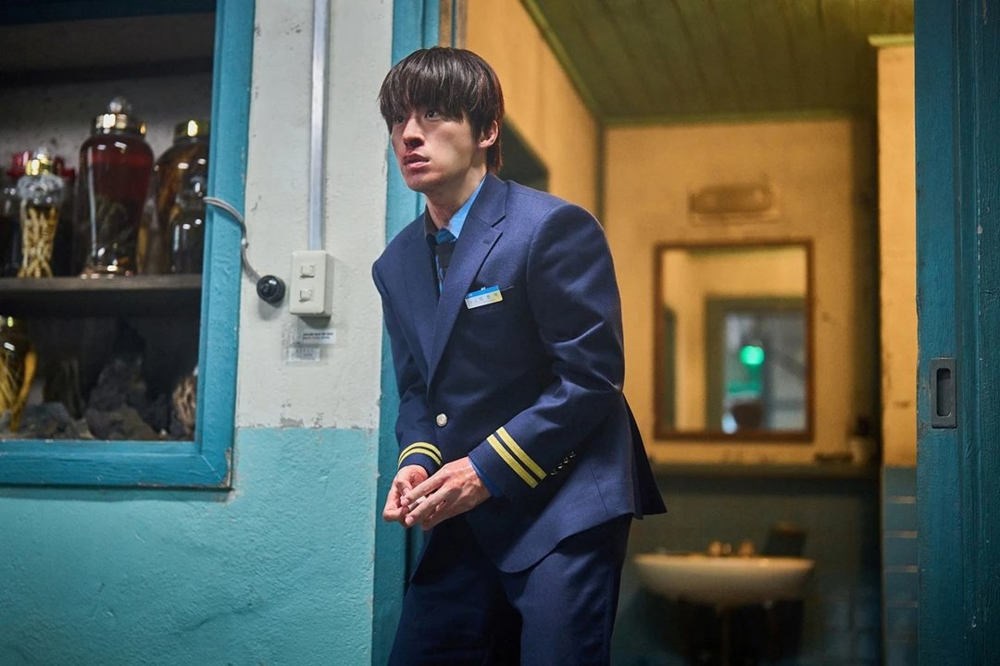
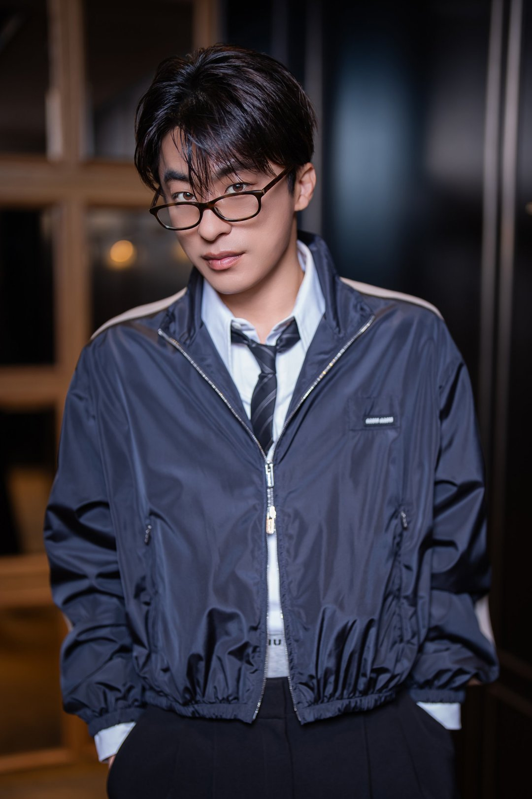

5만8천여 명. 김윤석·구교환의 '폭설'이 개봉 첫날인 18일 모은 관객 수예요. 같은 날 문을 연 영화들 사이에서 박스오피스 1위로 출발했어요. 그럼 이 숫자는 어느 정도의 출발일까요?
📷 사진 1 자리
▲ 영화 '폭설' 메인 포스터, 김윤석·구교환 · 사진=쇼박스 제공
2위·3위와 나란히 놓고 보면
영화진흥위원회 통합전산망 기준으로 18일 2위는 같은 날 개봉한 공연 실황 영화 '임영웅│아임 히어로 더 스타디움2'로, 2만1257명이었어요. 3위 '헝거게임 50번째 추첨의 날'은 약 2만 명이었고요.
'폭설'은 2위의 약 2.7배를 모은 셈이에요. 3위까지 모두 첫날 성적인 만큼 같은 출발선에서 낸 차이라 비교가 쉬워요.
📷 사진 2 자리
▲ 눈 덮인 숲속의 현택(구교환)과 갑수(김윤석) · 사진=쇼박스 제공
개봉 직후 네이버 실관람객 평점은 9.6점(10점 만점)을 기록했어요. 첫날 관객 수와 평점이 함께 좋게 나온 출발이죠.
어떤 영화였나, 다시 짧게
폭설로 길이 끊긴 시골 기차역이 무대예요. 퇴직을 앞둔 역장 갑수(김윤석)와 새로 온 후임 현택(구교환)이 의문의 시신을 발견하면서 이야기가 시작돼요. 박수영과 노윤서도 함께 나와요.
📷 사진 3 자리
▲ 시골 기차역에 새로 부임한 현택(구교환) · 사진=쇼박스 제공
연출은 '소리도 없이'(2020)의 홍의정 감독이 신예 박선우 감독과 공동으로 맡았어요. 러닝타임은 89분으로 짧은 편이에요.
▶ 영상 1 자리
구교환의 올해 네 번째 개봉작
구교환은 올해 '만약에 우리'를 시작으로 '군체', '부활남: 더 레드', 그리고 '폭설'까지 네 편을 극장에 걸었어요. 개봉 전부터 '올해 가장 바쁜 배우'라는 말이 붙었던 이유예요.
📷 사진 4 자리
▲ '폭설' 개봉을 앞둔 구교환 · 사진=쇼박스 제공
이번 출연은 김윤석 때문이었다고 해요. 스포츠경향 인터뷰에서 그는 김윤석 연출작에 배우로 나가는 게 목표라며 "이번 '폭설'이 어쩌면 오디션일 수도"라고 했어요. 김윤석은 2019년 영화 '미성년'으로 감독 데뷔를 한 배우예요.
두 사람은 '모가디슈' 이후 두 번째로 한 화면에 섰어요. 구교환 말로는 이번엔 러닝타임 내내 두 인물이 함께 연기하는 구조라 붙어 있는 시간이 훨씬 길었다고 해요.
첫날 숫자보다 2위와의 격차가 더 흥미로워요. 팬덤이 확실한 공연 실황 영화와 같은 날 붙었는데도 2.7배 차이가 났다는 건, 짧고 단단한 미스터리를 찾는 관객이 그만큼 있었다는 뜻으로 읽혀요.
'폭설'은 개봉 첫날 5만8천여 명으로 1위에 올랐고 지금 전국 극장에서 상영 중이에요. 러닝타임 89분이라 평일 저녁 한 편으로도 부담이 적어요.
함께 보면 좋은 이슈


